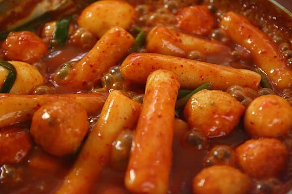

Tteokbokki: Sweet and Spicy Rice Cake

The go-to for stress relief with a kick that'll make you forget all your woes!
When it comes to comfort food, tteokbokki is probably what most koreans think about first. It is chewy rice cakes cooked in a red, sweet and spicy broth.
Ingredients
- 1 pound of cylinder shaped rice cake (tteok), bought or homemade. (Use a little more if you’re not adding hard boiled eggs and fish cakes)
- 4 cups of water
- 7 large size dried anchovies, with heads and intestines removed
- 6 x 8 inch dried kelp
- ⅓ cup hot pepper paste (gochujang)
- 1 tablespoon Korean hot pepper flakes (gochugaru) aka “Korean chili flakes”
- 1 tablespoon sugar
- 3 green onions (scallions), cut into 3 inch long pieces
- 2 hard boiled eggs, shelled (optional)
- ½ pound fish cakes (optional)
Steps
- Add the water, dried anchovies, and dried kelp to a shallow pot or pan.
- Boil for 15 minutes over medium high heat without the lid.
- Combine gochujang (hot pepper paste), gochugaru (hot pepper flakes), and sugar in a small bowl. Remove the anchovies and kelp from the pot and add the rice cake, the mixture in the bowl, the green onion, and the optional fish cakes and hard boiled eggs. The stock will be about 2½ cups.
- Stir gently with a wooden spoon when it starts to boil. Let it simmer and keep stirring until the rice cake turns soft and the tteokbokki sauce thickens and looks shiny, which should take about 10 to 15 minutes. If the rice cake is not soft enough, add more water and continue stirring until it softens. When you use freshly made rice cake, it takes shorter time. If you use frozen rice cake, thaw it out and soak in cold water to soften it before cooking.
- Remove from the heat and serve hot. If you have any leftovers, just keep them in the fridge and reheat them when you want to eat. You should finished it in a few days.